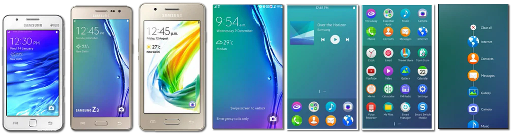
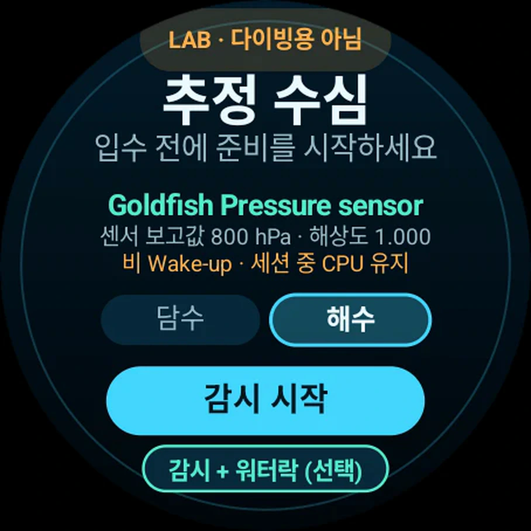
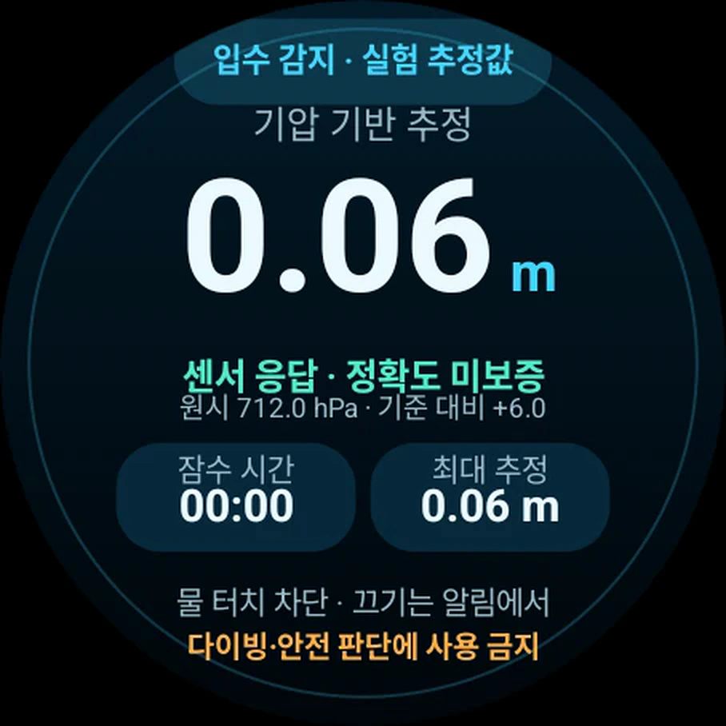

Samsung Electronics / UX
민영재Youngjae
Meen.
Principal UX Designer
모바일에서 웨어러블까지, 사람들이 매일 쓰는 제품을 설계해 왔습니다. 지금은 Galaxy Wearable의 UX 방향과 전체 디자인을 이끌며, 주요 인터랙션을 직접 프로토타입으로 만듭니다.I design products people use every day, from mobile platforms to wearables. Today I lead the UX direction and overall design of Galaxy Wearable, and build working prototypes of its key interactions.
소개와 경력About & experience

Galaxy Wearable
전체 UX 설계와 인터랙션 프로토타이핑Overall UX design and interaction prototyping
Selected work
제품으로 남은 일들Selected projects
직접 설계한 경험과, 팀과 함께 이끈 제품.Experiences I designed. Products I helped lead.

제품 오너 / PM · 2015 – 2019Product owner / PM · 2015 – 2019
Galaxy Watch Designer
워치페이스 제작부터 테스트와 배포까지. 5인 팀에서 제품의 범위와 UX를 이끌었습니다.A creator tool spanning watch-face design, testing and publishing. I owned the product scope and UX within a five-person team.

UX 프로젝트 리드 · 2019UX project lead · 2019
Galaxy Watch Active2
물리 베젤 없는 원형 화면의 탐색을 설계하고, 주요 UX 과제의 우선순위를 조율했습니다.I shaped navigation on a round screen without a physical bezel and coordinated priorities across the core watch experience.
최근 프로젝트 · UX 전략과 시나리오 설계Recent project · UX strategy and scenario design
AI Family Hub
가족이 함께 쓰는 화면에서 AI가 개입하는 시점과 사용자의 통제 범위를 설계했습니다.I defined when AI should intervene on a shared household screen and what people should remain able to control.

응용데이터사이언스 석사 논문 · 2023Master’s in Data Science · 2023
리뷰 텍스트와 평점 예측Review rating prediction
앱 리뷰 376만 건으로 2단 분류 모델을 비교했습니다. 최고 정확도 75.78%, 단일 단계 대비 +6.25%p.I compared two-stage classifiers using 3.76 million app reviews. Best accuracy: 75.78%, up 6.25 pp over the best one-stage model.

Core UX 디자이너 · 2013 – 2015Core UX designer · 2013 – 2015
Tizen Phone
인도 현지 조사에서 시작해 홈, 잠금 화면과 멀티태스킹을 직접 설계했습니다.Field research in India informed my hands-on design of Home, Lock and Multitasking.


개인 실험 · Galaxy Watch8Independent experiment · Galaxy Watch8
Pressure DepthApprox
기압 센서로 얕은 물의 수심을 추정하는 실험입니다. 사용 중지와 센서 오류 대응을 먼저 설계했습니다. 다이빙용이 아닙니다.An experiment in estimating shallow-water depth with a pressure sensor. I designed stop and sensor-failure behavior first. Not for diving.
More work
다른 제품과 실험More products & experiments
촬영과 편집 소프트웨어, 기기 간 협업, 그리고 직접 만든 게임.Capture and editing software, cross-device collaboration, and games I made.
 Youngjae Meen
Youngjae Meen민영재
전기전자공학에서 UX로, 그리고 데이터사이언스로. 기술을 이해하고 직접 만들어 보는 태도는 지금도 제 일의 바탕입니다.From electrical engineering to UX and applied data science, understanding the technology and making things myself have stayed central to my work.
프로필 보기Read my profile ↗